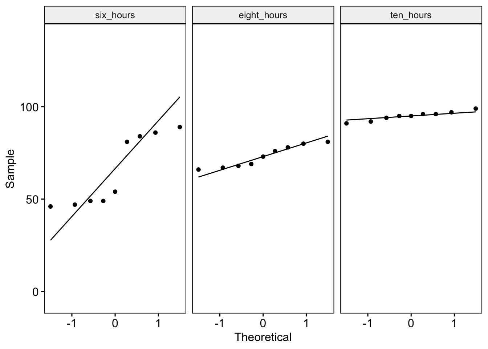

7. Kruskal-Wallis test and Friedman’s ANOVA
Amy Atkinson
Lecture
This lecture comprises two parts:
Part 1: This part covers how to assess the assumption of normality when you have three or more independent groups, the theory behind the Kruskal-Wallis test, how the test statistic would be calculated manually, how to run the test in R, and how to interpret the output.
Part 2: This part covers how to assess the assumption of normality when you have three or more repeated measures,the theory behind the Friedman’s ANOVA, how the test statistic would be calculated manually, how to run the test in R, and how to interpret the output.
Download all the lecture slides here in both .pptx and .pdf format.
Lab preparation
Before the lab, please watch the following short video. This walks you through how to perform a Kruskal-Wallis test and Friedman’s ANOVA in R.
If you want to have a play around with the script yourself, the R markdown script and datasets can be downloaded here.
Lab
Overview
I’ll provide you with one or two research questions each week which will require you to complete the statistical tests covered in the lectures. You can work in groups or individually.
You can write your script as a .R or Rmd file. Use the lab preparation video and script, lecture slides, and previous content covered in the statistics modules to help you.
The presentation given at the start of the lab can be downloaded here.
Research Question 1
You are a psychology lecturer. You hear that the library is offering three statistics courses. You are interested in whether students who attend the courses perform significantly differently from each other.
You recruit 18 people and assign each one to a course. After the courses are finished, you ask them to write an R script. You time how long it takes students to complete the task. You are interested in whether there is a significant effect of course on the time taken to complete the task.
Research Question 2
You are a developmental psychologist. You are interested in whether working memory develops between 15 and 17 years of age.
You recruit a sample of adolescents and test them on a working memory task when they are 15 years of age, 16 years of age, and 17 years of age.
You then examine whether there is a significant effect of age on working memory score.
Hints and tips
Your script should aim to answer and interpret both of these research questions. Start a new session on the server, then load in the required libraries (tidyverse, cowplot, ggpubr, rstatix) and the datasets.
For each research questions, you will need to:
Perform normality checks
Explore your data (e.g. descriptive statistics, a plot)
Conduct the statistical test
Calculate an effect size
Conduct post-hoc tests (where appropriate)
Interpret the output
Upload your script to be considered for feedback
You/your group have the opportunity to submit your script to be considered for feedback. If you would like to submit your script, you can do so here by 5pm on Friday of Week 17. I’ll provide feedback on a subset of scripts. You will not be judged or marked on your scripts – I’m providing feedback to help you to improve your coding skills and prepare you for your dissertation next year.
Model script
A model script showing one way of answering the research questions above using R will be available here from 9am on Monday of Week 18.
Independent learning activities
Below are some independent learning activities you can have a go at to help consolidate the content. These are optional, but recommended. Activity 1 is the WBA. Activities 2 and 3 are further activities to help you consolidate the content.
Activity 1: The WBA
The WBA can be accessed here from 20th February 2025. Each student gets three attempts. We recommend having a go at the WBA following the lecture and lab. We recommend saving at least one attempt for revision purposes close in time to the class test.
Activity 2: Understanding how the non-parametric tests differ and when to use them
It is really important that you understand which statistical test you should run in different situations. This activity will test your knowledge of the statistical tests you learned during this lecture as well as recapping what you learned in Week 16. The answers are below.
In each of the following scenario, you are interested in whether the type of chocolate eaten affects feelings of contentment (response = 0-100). For each scenario, think about the following questions:
Scenario 1: You recruit 20 participants. On day 1, they eat milk chocolate. On day 2, they eat dark chocolate. On day 3, they eat white chocolate.
a) How would you check whether the assumption of normality is violated for this design?
b) If the assumption of normality is violated, which non-parametric test would you run?
Scenario 2: You recruit 12 participants and randomly assign them to either a “white chocolate”, “milk chocolate”, or “dark chocolate” group.
a) How would you check whether the assumption of normality is violated for this design?
b) If the assumption of normality is violated, which non-parametric test would you run?
Scenario 3: You recruit 7 participants. On day 1, they eat milk chocolate and on day 2, they eat dark chocolate.
a) How would you check whether the assumption of normality is violated for this design?
b) If the assumption of normality is violated, which non-parametric test would you run?
Scenario 4: You recruit 10 participants and randomly assign them to either a “white chocolate” or “milk chocolate” group.
a) How would you check whether the assumption of normality is violated for this design?
b) If the assumption of normality is violated, which non-parametric test would you run?
Activity 2 answers:
Scenario 1: You recruit 20 participants. On day 1, they eat milk chocolate. On day 2, they eat dark chocolate. On day 3, they eat white chocolate.
a) How would you check whether the assumption of normality is violated for this design?
Assess whether the assumption of normality is violated per condition. This can be done using Q-Q plots and the Shapiro-Wilk test.
b) If the assumption of normality is violated, which non-parametric test would you run?
Friedman’s ANOVA
Scenario 2: You recruit 12 participants and randomly assign them to either a “white chocolate”, “milk chocolate”, or “dark chocolate” group.
a) How would you check whether the assumption of normality is violated for this design?
Assess whether the assumption of normality is violated per group. This can be done using Q-Q plots and the Shapiro-Wilk test.
b) If the assumption of normality is violated, which non-parametric test would you run?
Kruskal-Wallis test
Scenario 3: You recruit 7 participants. On day 1, they eat milk chocolate and on day 2, they eat dark chocolate.
a) How would you check whether the assumption of normality is violated for this design?
Calculate a difference score for each participant (Condition 1 – Condition 2). Assess whether the assumption of normality is violated for the “difference”. This can be done using Q-Q plots and the Shapiro-Wilk test.
b) If the assumption of normality is violated, which non-parametric test would you run?
Wilcoxon signed-rank test
Scenario 4: You recruit 10 participants and randomly assign them to either a “white chocolate” or “milk chocolate” group.
a) How would you check whether the assumption of normality is violated for this design?
Assess whether the assumption of normality is violated per group. This can be done using Q-Q plots and the Shapiro-Wilk test.
b) If the assumption of normality is violated, which non-parametric test would you run?
Wilcoxon rank-sum test
Activity 3: Interpreting R output
Part 1: An independent groups design
You are a developmental psychologist interested in whether the books children are exposed to affects their language production (how many words they can say). You recruit 21 2-year-old children and assign them to one of three groups – “Pinocchio”, “Cinderella”, and “Gruffalo”. The children’s parents then read this story every day for three months (i.e. children in the “Gruffalo” group read the Gruffalo every day). You then ask their parents to complete a language production assessment on their child (score = 0-100).
Testing the assumption of normality:
Q-Q plots:
Shapiro-Wilk test:
# A tibble: 3 × 4
Book variable statistic p
<chr> <chr> <dbl> <dbl>
1 Cinderella Words 0.967 0.876
2 Gruffalo Words 0.891 0.281
3 Pinocchio Words 0.752 0.0133QUESTION 1: Is the assumption violated?
Descriptive statistics and model output
Descriptive statistics:
# A tibble: 3 × 4
Book med_words min_words max_words
<chr> <int> <int> <int>
1 Cinderella 16 12 18
2 Gruffalo 67 61 69
3 Pinocchio 25 21 58Model output:
Kruskal-Wallis rank sum test
data: Words by Book
Kruskal-Wallis chi-squared = 17.853, df = 2, p-value = 0.0001328Effect size:
# A tibble: 1 × 5
.y. n effsize method magnitude
* <chr> <int> <dbl> <chr> <ord>
1 Words 21 0.881 eta2[H] large Post-hoc tests:
# A tibble: 3 × 9
.y. group1 group2 n1 n2 statistic p p.adj p.adj.signif
* <chr> <chr> <chr> <int> <int> <dbl> <dbl> <dbl> <chr>
1 Words Cinderella Gruffalo 7 7 0 0.002 0.006 **
2 Words Cinderella Pinocchio 7 7 0 0.002 0.006 **
3 Words Gruffalo Pinocchio 7 7 49 0.002 0.006 ** QUESTION 2: What can we conclude? Report in APA format.
Part 2: A repeated measures design
You are a researcher interested in whether the number of hours sleep individuals get affects their performance on an attention task (score = 0-100). You recruit nine participants, with all participants taking part in three conditions. In the first condition, participants get 6 hours sleep the night before (6 hours). In the second condition, they get 8 hours sleep the night before (8 hours), and in the third condition, they get 10 hours sleep the night before (10 hours).
Testing the assumption of normality:

# A tibble: 3 × 4
Hours variable statistic p
<fct> <chr> <dbl> <dbl>
1 six_hours Score 0.779 0.0116
2 eight_hours Score 0.902 0.267
3 ten_hours Score 0.970 0.892 QUESTION 3: Is the assumption violated?
Descriptive statistics and model output
Descriptive statistics:
# A tibble: 3 × 5
Hours med min max n
<fct> <int> <int> <int> <int>
1 six_hours 54 46 89 9
2 eight_hours 73 66 81 9
3 ten_hours 95 91 99 9Model output:
Friedman rank sum test
data: Score and Hours and Participant
Friedman chi-squared = 13.556, df = 2, p-value = 0.001139Effect size:
# A tibble: 1 × 5
.y. n effsize method magnitude
* <chr> <int> <dbl> <chr> <ord>
1 Score 9 0.753 Kendall W large Post-hoc tests:
# A tibble: 3 × 9
.y. group1 group2 n1 n2 statistic p p.adj p.adj.signif
* <chr> <chr> <chr> <int> <int> <dbl> <dbl> <dbl> <chr>
1 Score six_hours eight_hours 9 9 10 0.155 0.155 ns
2 Score six_hours ten_hours 9 9 0 0.009 0.027 *
3 Score eight_hours ten_hours 9 9 0 0.009 0.027 * QUESTION 4: What can we conclude? Report in APA format.
Activity 3 answers:
Part 1:
QUESTION 1: Is the assumption violated?
The Q-Q plot and the Shapiro-Wilk test suggests that the assumption of normality is violated for the Pinocchio group. Data in the Cinderella and Gruffalo group does not appear to violate the assumption.
QUESTION 2: What can we conclude? Report in APA format.
The Kruskal-Wallis test revealed a significant effect of book on the language production score, H(2) = 17.85, p < .001, η2 = .88. Post-hoc comparisons were conducted pairwise Wilcoxon rank-sum tests, with p-values corrected using Bonferroni-Holm. Participants in the Gruffalo group (median = 67; range = 61-69) scored significantly higher on the assessment than participants in the Cinderella (median = 16; range = 12-18, p = .006) and Pinocchio (median = 25; range = 21-58; p = .006) groups. Furthermore, participants in the Pinocchio group scored significantly higher than participants in the Cinderella group (p = .006).
Part 2:
QUESTION 3: Is the assumption violated?
Data in the 6 hour condition appears to violate the assumption of normality.
QUESTION 4: What can we conclude? Report in APA format.
A Friedman’s ANOVA revealed a significantly effect of sleep hours on the attention score, \(X^2_{\,F}(2)\) = 13.56, p = .001, W = .75. Post-hoc comparisons were then conducting using pairwise Wilcoxon signed-rank tests, with p-values corrected using Bonferroni-Holm. Participants performed significantly better in the 10-hour condition (median = 95; range = 91-99) relative to the 6-hour (median = 54; range = 46-89, p = .027) and 8-hour (median = 73; range = 66- 81, p = .027) conditions. No significant difference emerged between the 6-hour and 8-hour conditions (p = .155).
Asking questions
If you have any questions about this week’s content, please post them on the discussion board here. If you prefer to remain anonymous, you can post questions anonymously here. I will then copy your question to the discussion forum and answer it there and/or cover it in next Q&A session.